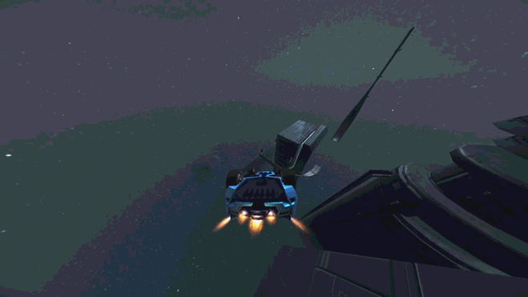
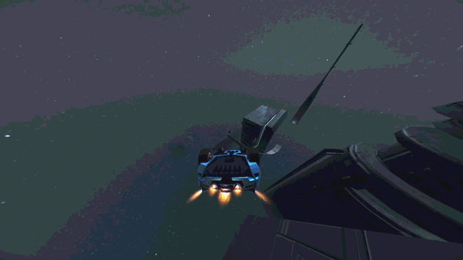

A Guide To Most Distance Mechanics
> Tricks
There are many tricks you can do in this game, however, for non-stunt modes, there are only a few that are really helpful:
- Barrel Roll [50% cooldown]
- Front Twist [75% cooldown]
- Barrel Roll + Front Twist (Recall/Nachos) [80% cooldown]
- Front Twist + Front Twist (Breakdown) [97% cooldown]
- Barrel Roll/Front Twist + Front Twist + Front Twist (Nostalgia/Freestyle) [100% cooldown]
Most of the time, barrel rolls will suffice, and in official maps I think it will often be the only trick you have to worry about. Sometimes though, the fastest route may require landing for more cooldown than one barrel roll can provide (such is the case for the fastest route for the official level 'Hard Light Transfer' by Refract).

I realize front twists may take a while to get used to doing. My only advice is that it helps to anticipate the direction the front twist will point your car in before doing it, and to point your car in a direction before you start your front twist so that after you do the front twist, your car will point in the direction you wanted it to initially.
Also, I find that, usually, doing 2 barrel rolls is always faster than doing any of the tricks requiring a front twist except in cases where you would have to slow down to do two barrel rolls due to the landing space not being large enough to do it without slowing down.
Another thing to note is that tricks are only "cashed in" when all of your car's wheels touch a surface at the same time, but this was probably obvious.
Tricks do time out if you do not do another trick in the 5 seconds after the previous one. Rubbing or bumping the car body against a surface can reset the timer though, since it counts as a 'Grind' trick, even if the text for the grind doesn't even show up.
Lastly, you can actually store the rotation for tricks, even after landing. For example, it takes a 270° rotation in one direction for a barrel roll to register. But, if you are starting on a normal flat road, you can jump and do 180° in one direction, land on a ceiling, jump off the ceiling, do just 90° in the same direction as before, and the barrel roll will still count, even though you landed in between rotations. The rotation for tricks resets, however, immediately after landing a trick of any kind, even if the trick landed doesn't involve rotation (like a wall ride or a grind).
- Barrel Roll [50% cooldown]
- Front Twist [75% cooldown]
- Barrel Roll + Front Twist (Recall/Nachos) [80% cooldown]
- Front Twist + Front Twist (Breakdown) [97% cooldown]
- Barrel Roll/Front Twist + Front Twist + Front Twist (Nostalgia/Freestyle) [100% cooldown]
Most of the time, barrel rolls will suffice, and in official maps I think it will often be the only trick you have to worry about. Sometimes though, the fastest route may require landing for more cooldown than one barrel roll can provide (such is the case for the fastest route for the official level 'Hard Light Transfer' by Refract).

I realize front twists may take a while to get used to doing. My only advice is that it helps to anticipate the direction the front twist will point your car in before doing it, and to point your car in a direction before you start your front twist so that after you do the front twist, your car will point in the direction you wanted it to initially.
Also, I find that, usually, doing 2 barrel rolls is always faster than doing any of the tricks requiring a front twist except in cases where you would have to slow down to do two barrel rolls due to the landing space not being large enough to do it without slowing down.
Another thing to note is that tricks are only "cashed in" when all of your car's wheels touch a surface at the same time, but this was probably obvious.
Tricks do time out if you do not do another trick in the 5 seconds after the previous one. Rubbing or bumping the car body against a surface can reset the timer though, since it counts as a 'Grind' trick, even if the text for the grind doesn't even show up.
Lastly, you can actually store the rotation for tricks, even after landing. For example, it takes a 270° rotation in one direction for a barrel roll to register. But, if you are starting on a normal flat road, you can jump and do 180° in one direction, land on a ceiling, jump off the ceiling, do just 90° in the same direction as before, and the barrel roll will still count, even though you landed in between rotations. The rotation for tricks resets, however, immediately after landing a trick of any kind, even if the trick landed doesn't involve rotation (like a wall ride or a grind).
1 > >>
1 2 3 4 5 6 7 8 9 10 11 12
1 2 3 4 5 6 7 8 9 10 11 12
• Tricks • Turning In Midair With Gripfly • Slightly Faster Wing Turning • Differences in Forward Gripfly and Frontward Gripfly • Throttling Boost When Going Up Then Forward • Advantage Of Slow Falling Before Going Up • Wings To Make Higher Jumps • Air Drift • Vertical Gripfly Interaction With Force Zone • Advantage Of Backwards Gripfly • Rotational Alignment Through Rotating In One Direction • Cooldown Through Thruster/Grip Tapping •